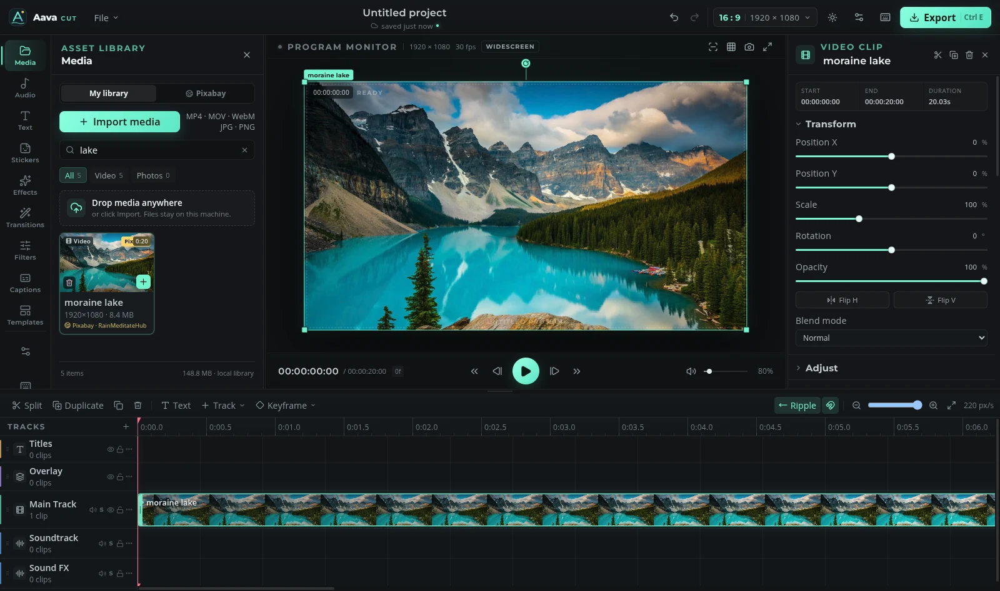

A real timeline
Multi-track editing, trim handles, ripple delete, snapping and spring-eased keyframes. Built for the way edits actually happen.
Aava Cut 2.1 is here
Aava is a new home for creative and productive software. The first release, Aava Cut, is a local-first video editor for Linux — serious timeline tools without the cloud, the account, or the upload.

The first release
A desktop video editor that treats your machine as the studio. Built for Linux, tuned for AMD Radeon, and designed to stay out of the way.
Multi-track editing, trim handles, ripple delete, snapping and spring-eased keyframes. Built for the way edits actually happen.
Speech-to-text runs on your machine with whisper.cpp and Vulkan. Review the transcript before it ever touches the timeline.
Grades, transitions, effects, typography and keyframe animation — with an inspector that stays precise when the edit gets dense.
Probes real VAAPI encoders on Radeon hardware and falls back cleanly. H.264, H.265, AV1 and 10-bit HDR delivery.
Import once. Source files, waveform peaks, generated frames and exports live in folders you can see, move and clean up.
A live, seeing MCP bridge lets an agent read the open project and apply validated timeline commands. No shell access.
Also inside: Pixabay stock media, Lots of Sounds CC0 effects, TikTok audio import with consent, a 10-band EQ, and full-duration imports.
Read the sourceThe Aava suite
Aava is being built as a family of tools, not a single app. Cut is ready today. The rest are in development, and will arrive under the same calm roof.
Video editing. Timeline, captions, colour, audio and delivery.
DownloadPhotography. A local-first home for culling, grading and finishing stills.
Coming laterDesign and vector. Layout, type and identity with a steady hand.
Coming laterAudio. Shaping sound, from a single take to a full mix.
Coming laterMotion and VFX. Movement, compositing and the spaces between frames.
PlannedDocs, Sheets, Slides, Code and Flow are part of the long view. No dates, no theatre.
The long viewOpen by design
Aava Cut does not need an account. It does not upload your media, count your exports, or phone home. The editor, the media server and the captions runtime all run locally. The source is MIT licensed.
Get the first release
Download the package that fits your system. All builds are x86_64 and include the editor, local media server, whisper.cpp runtime and bundled yt-dlp.
Need Node.js only for the optional MCP helper. The editor itself does not require an account or a separate server. All releases and checksums